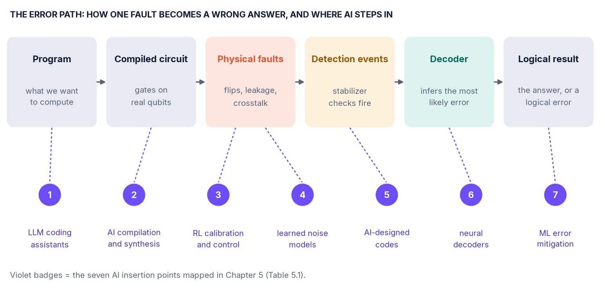

ในบทความนี้
- เริ่มที่ output — histogram บอกทุกอย่างหรือไม่
- X, Z, Y — สร้างศัพท์ error ที่ตรวจได้
- ลงมือ — เปิดเผย phase error ด้วย H
- เหตุใด copy แล้ว vote จึงยังไม่พอ
- ตาม error path — fault ไม่เท่ากับ failure
- เลือก noise model — อย่าทิ้ง correlation
- แบบฝึก — เพิ่มการวัดให้ตรงกับ failure
- Run & check — รันตัวอย่างด้วยตัวเอง
- Sources & scope — แหล่งอ้างอิงและขอบเขต
In this post
- A histogram does not describe the whole state
- X, Z and Y give us an error vocabulary
- Run the phase error that one readout hides
- Why the classical copy-and-vote fix fails
- Trace the error path from fault to failure
- Choose a noise model that preserves the hard part
- Exercise: make the observation match the failure
- Run and check the example
- Sources and scope
เริ่มที่ output — histogram บอกทุกอย่างหรือไม่
ดาวน์โหลดหนังสือและโค้ดประกอบ
ดาวน์โหลด Below Threshold ฉบับเต็ม (PDF ภาษาอังกฤษ · 104 หน้า · 5.4 MB)
อ่านบน Google Drive · ดาวน์โหลดตัวอย่าง Python ทั้งสิบบท (ZIP)
บทที่ 2/10 · บทเรียนดัดแปลงจาก Below Threshold: AI, Quantum Errors and Better Code ฉบับ 1.0 บทที่ 2 หน้า 9–12
programmer คุ้นกับการ print ตัวแปรแล้วเห็น state ของโปรแกรม แต่ qubit ไม่ได้เปิดข้อมูลทั้งหมดจากการวัดครั้งเดียว pure state เขียนเป็น |ψ⟩ = α|0⟩ + β|1⟩ โดย α และ β เป็น complex amplitudes และ |α|² + |β|² = 1 การวัดใน Z basis ให้ 0 หรือ 1 ตามขนาดกำลังสอง ไม่ได้บอก relative phase
บทนี้ใช้ Python และ vector สองสมาชิกจากบทพื้นฐาน เป้าหมายคือแยก bit flip ออกจาก phase flip อธิบายว่าทำไม copy แล้ว vote แบบ classical ใช้กับ unknown quantum state ไม่ได้ และไล่ได้ว่า physical fault เดินทางถึงผลลัพธ์อย่างไร
ข้อควรจำคือ measurement basis เป็นส่วนหนึ่งของ output contract หาก circuit สองตัวให้ histogram เหมือนกันใน basis เดียว ยังสรุปไม่ได้ว่าทั้งสองเตรียม state เดียวกัน หรือจะให้ผลเหมือนกันเมื่อมี gates ถัดไป
X, Z, Y — สร้างศัพท์ error ที่ตรวจได้
X สลับ amplitude ของ |0⟩ กับ |1⟩ จึงเรียก bit flip ส่วน Z กลับเครื่องหมาย amplitude ของ |1⟩ จึงเรียก phase flip และ Y รวมการเปลี่ยนทั้งสองแบบโดยมี phase ประกอบ I, X, Y, Z เป็น basis สำหรับ operator บน qubit เดียว นี่คือเหตุผลทาง linear algebra ที่ทำให้เราวิเคราะห์ noise ต่อเนื่องด้วยชนิด error ที่ไม่ต่อเนื่องได้
ใน stabilizer code การวัด syndrome ทำให้ส่วนของ error ที่แยกแยะได้ด้วย checks ให้ผลแบบไม่ต่อเนื่อง แต่ไม่ควรอ่านว่า “ทุก physical fault ถูกแปลงเป็น random Pauli ที่เป็นอิสระกันอย่างสมบูรณ์” coherent noise, leakage และ correlation ยังเป็นประเด็นที่ noise model ต้องจัดการ
แบบจำลอง depolarizing ที่หนังสือใช้เป็นจุดเริ่มต้น กำหนดให้เกิด X, Y หรือ Z ด้วย probability p/3 อย่างละชนิด แต่จะใช้พารามิเตอร์ p ใด ต้องอ่าน convention ของ implementation เพราะ library แต่ละตัวอาจใช้ชื่อเดียวกันกับพารามิเตอร์คนละนิยาม
ลงมือ — เปิดเผย phase error ด้วย H
โค้ดนี้เป็นตัวอย่างใหม่ ใช้ matrix 2×2 คำนวณ state แบบ exact โดยไม่มี hardware noise เริ่มจาก |0⟩ แล้วใช้ H ได้ |+⟩ = (|0⟩ + |1⟩)/√2 ถ้าแทรก Z จะได้ |−⟩ = (|0⟩ − |1⟩)/√2 ทั้งสองให้ probability (0.5, 0.5) หากวัดทันทีใน Z basis
"""Exact two-amplitude teaching model: a phase error can hide in Z readout."""
from math import isclose, sqrt
def apply(gate, state):
return tuple(sum(gate[i][j] * state[j] for j in range(2)) for i in range(2))
def probabilities(state):
return tuple(round(abs(a) ** 2, 6) for a in state)
r = 1 / sqrt(2)
H = ((r, r), (r, -r))
X = ((0, 1), (1, 0))
Z = ((1, 0), (0, -1))
Y = ((0, -1j), (1j, 0))
zero = (1 + 0j, 0j)
plus = apply(H, zero)
minus = apply(Z, plus)
print("|+>, measured in Z:", probabilities(plus))
print("Z|+>, measured in Z:", probabilities(minus))
print("H|+>, measured in Z:", probabilities(apply(H, plus)))
print("HZ|+>, measured in Z:", probabilities(apply(H, minus)))
print("X|0>, measured in Z:", probabilities(apply(X, zero)))
print("Y|0>, measured in Z:", probabilities(apply(Y, zero)))
assert probabilities(plus) == probabilities(minus)
assert probabilities(apply(H, plus)) == (1.0, 0.0)
assert probabilities(apply(H, minus)) == (0.0, 1.0)
for gate in (H, X, Y, Z):
assert isclose(sum(abs(a) ** 2 for a in apply(gate, plus)), 1.0)
print("Checks passed: normalization and a hidden phase revealed by H")|+>, measured in Z: (0.5, 0.5)
Z|+>, measured in Z: (0.5, 0.5)
H|+>, measured in Z: (1.0, 0.0)
HZ|+>, measured in Z: (0.0, 1.0)
X|0>, measured in Z: (0.0, 1.0)
Y|0>, measured in Z: (0.0, 1.0)
Checks passed: normalization and a hidden phase revealed by HH ตัวสุดท้ายทำให้ความต่างปรากฏ: H|+⟩ ให้ 0 แน่นอน ขณะที่ HZ|+⟩ ให้ 1 แน่นอน จึงตรวจ phase ผ่านการแปลง basis ได้ ไม่ได้ต้องอ่าน amplitude ทั้งหมดจากเครื่องจริง ส่วน X|0⟩ และ Y|0⟩ ให้ histogram เหมือนกัน เพราะ phase รวมของ state วัดไม่เห็นจาก probability
ผลที่พิมพ์เป็น exact probabilities ที่ปัดทศนิยม ไม่ใช่ counts จาก shots ถ้ารัน circuit เดียวกันบน sampler ให้เปรียบเทียบ distribution พร้อม sampling uncertainty และหากใช้ hardware ต้องเพิ่ม noise และ readout calibration แยกต่างหาก
เหตุใด copy แล้ว vote จึงยังไม่พอ
No-cloning theorem ของ Wootters และ Zurek ห้าม operation เดียวที่สร้างสำเนา state ที่ไม่ทราบค่าได้อย่างถูกต้องสำหรับทุก state ไม่ได้ห้ามการ copy classical bit ที่ทราบ basis และไม่ได้ห้ามการเตรียม state เดิมซ้ำจากขั้นตอนที่เรารู้
ลองใช้ CNOT โดยมี unknown qubit α|0⟩ + β|1⟩ เป็น control และ |0⟩ เป็น target ผลคือ α|00⟩ + β|11⟩ ไม่ใช่ (α|0⟩ + β|1⟩)⊗(α|0⟩ + β|1⟩) โดยทั่วไป ผลแรกเป็น encoding ที่มี entanglement ส่วนผลหลังคือสำเนาที่ theorem ไม่อนุญาตให้สร้างแบบ universal
Quantum error correction จึงเข้ารหัสข้อมูลร่วมกัน แล้วอ่าน parity หรือ stabilizer checks ที่ไม่แยกแยะ logical 0 กับ logical 1 การวัด data qubits ทุกตัวเพื่อ “ดูว่าถูกไหม” ทำให้ข้อมูล phase ที่ต้องรักษาหายได้ บท 3 จะสร้าง checks จากตัวอย่าง classical ที่ตรวจด้วยมือได้ก่อน
ตาม error path — fault ไม่เท่ากับ failure


อ่านภาพจาก program ไป compiled gates แล้วจึงถึง physical fault เช่น gate pulse ผิดหรือ readout รายงานผิด fault อาจกระจายผ่าน two-qubit gates และเปลี่ยนผล checks ระบบสร้าง detection events จากความเปลี่ยนแปลงของ checks ตามเวลา แล้วส่งให้ decoder
decoder อาจเก็บ correction ไว้ใน Pauli frame โดยไม่ส่ง gate เพิ่มทุกครั้ง สิ่งสำคัญคือ logical interpretation ของ state ถ้า correction กับ error จริงต่างกันเพียง stabilizer ข้อมูล logical ยังถูก ถ้าต่างกันด้วย logical operator ผลลัพธ์ผิด แม้ syndrome จะกลับมาดูสะอาดแล้วก็ตาม
นี่คือความต่างระหว่างการ detect กับการ correct การรู้ว่า checks ผิดบางจุดไม่ได้แปลว่ารู้ error ที่เกิดขึ้นแน่นอน decoder ต้องอนุมานจากข้อมูลที่มีพร้อม prior ของ noise model ในบท 4 เราจะดูว่า learned decoder ช่วยเมื่อ prior แบบง่ายไม่พออย่างไร
เลือก noise model — อย่าทิ้ง correlation
relaxation ทำให้ |1⟩ decay ไป |0⟩, dephasing ลด phase coherence, leakage พา state ออกจาก computational subspace ส่วน crosstalk ทำให้ operation บน qubit หนึ่งรบกวนอีก qubit หนึ่ง ทั้งหมดอาจให้ histogram บางส่วนคล้ายกัน แต่ตอบสนองต่อ checks และเวลาไม่เหมือนกัน
แบบจำลอง error ที่เป็นอิสระเหมาะสำหรับเริ่มเรียน แต่ correlation อาจทำให้ redundancy ที่เพิ่มมาช่วยน้อยกว่าที่คิด การวัด decoder จึงต้องระบุ data-generating process, รูปแบบ drift, จำนวน rounds และ logical observable ไม่ใช่บันทึกแค่จำนวน qubits
ใน รายงาน Willow logical error ต่อ cycle ผูกกับ memory experiment และ decoder ที่ระบุ ไม่ควรนำไปแทน application-wide success หรือเทียบ platform ที่ cycle time ต่างกันโดยตรง ภาพในบทนี้เป็นแผนผังจากหนังสือ ไม่ใช่ผล hardware ใหม่
แบบฝึก — เพิ่มการวัดให้ตรงกับ failure
เพิ่ม identity gate และเปรียบเทียบทุก Pauli บน |0⟩ และ |+⟩ ทั้งก่อนและหลัง H ตัวสุดท้าย invariant คือ normalization ต้องเท่ากับหนึ่งเสมอ และ H สองครั้งต้องคืน state เดิมภายใน floating-point tolerance
เขียน test ที่ใช้เฉพาะ Z probabilities แล้วแสดงว่ามันพลาด phase flip บน |+⟩ จากนั้นเพิ่ม basis change เพื่อแยกสองกรณี อธิบายให้ได้ว่าทำไม test ใหม่ตรวจ state ที่เตรียมซ้ำได้ แต่ไม่ใช่วิธีอ่าน amplitude ทุกตัวจาก unknown state สำเนาเดียว
ผลการเรียนรู้ที่ต้องได้คือเลือก measurement ตาม property ที่ต้องรักษา ไม่ใช่ดู histogram ที่สวยแล้วสรุปว่าไม่มี error บทถัดไปเปลี่ยนการสังเกตแบบนี้ให้เป็น syndrome และกฎ correction ที่ตรวจครบทุก single flip ได้
Run & check — รันตัวอย่างด้วยตัวเอง
ตัวอย่างสำหรับสอนนี้ใช้ Python standard library เท่านั้น บันทึก ch02.py แล้วรันด้วย Python 3.10 ขึ้นไป โดย assertions ตรวจ invariant ที่อธิบายในบท
python3 ch02.pyตัวอย่างทั้งสิบบทและผลลัพธ์ที่คาดหวัง (ZIP) · อ่าน source บน GitHub
Sources & scope — แหล่งอ้างอิงและขอบเขต
เอกสารและหลักฐาน
โครงบท ภาพที่ให้เครดิต และผล lab ที่รายงานมาจากหนังสือของผู้เขียน ณ November 2026 ตัวอย่างสั้นที่ใช้ standard library รันเพื่อตรวจบทเรียนเว็บวันที่ 25 November 2026 เป็นแบบจำลองเพื่อสอน ไม่ได้รันซ้ำการทดลอง Stim, neural network, mitigation หรือ LLM ฉบับเต็มในหนังสือ ข้ออ้าง hardware, simulator, preprint และบริษัทคงขอบเขตตามที่ระบุ
- Anirach Mingkhwan. Below Threshold: AI, Quantum Errors and Better Code. Edition 1.0 (November 2026), Chapter 2, pp. 9–12.
- Wootters and Zurek. A single quantum cannot be cloned (1982).
- Gottesman. Stabilizer Codes and Quantum Error Correction (1997).
- Google Quantum AI and collaborators. Quantum error correction below the surface code threshold (online 2024; Nature 2025).
A histogram does not describe the whole state
Download the book and examples
Download the complete Below Threshold book (English PDF · 104 pages · 5.4 MB)
Read on Google Drive · Download all ten Python examples (ZIP)
Chapter 2/10. A tutorial adaptation of Below Threshold: AI, Quantum Errors and Better Code, Edition 1.0, Chapter 2, pp. 9–12.
Programmers expect to print a variable and inspect its value. One qubit measurement does not expose the complete quantum state. A pure state is |ψ⟩ = α|0⟩ + β|1⟩, where α and β are complex amplitudes and |α|² + |β|² = 1. A Z-basis measurement samples their squared magnitudes; it does not reveal their relative phase.
This lesson needs Python and two-element vectors. Its goals are to distinguish a bit flip from a phase flip, explain why copying an unknown quantum state and taking a classical vote fails, and trace a physical fault to an incorrect logical answer.
The measurement basis belongs in the output contract. Matching histograms in one basis do not establish that two circuits prepare the same state or that later gates will produce the same result.
X, Z and Y give us an error vocabulary
X swaps the amplitudes of |0⟩ and |1⟩: a bit flip. Z changes the sign of the |1⟩ amplitude: a phase flip. Y combines both transformations, with a phase factor. I, X, Y and Z form a basis for single-qubit operators. This linear-algebra fact lets error-correction theory analyse continuous disturbances through discrete error components.
In a stabilizer code, syndrome measurement separates error components distinguishable by the checks. Do not read this as a claim that every physical fault becomes a perfectly independent random Pauli. Coherent noise, leakage and correlations still matter to the model and implementation.
The book introduces depolarizing noise with X, Y and Z each occurring with probability p/3. Read a library’s parameter convention before comparing p values: similarly named channels can use different numerical parameterizations.
Run the phase error that one readout hides
This new example multiplies exact 2×2 matrices; it includes no hardware noise. H maps |0⟩ to |+⟩ = (|0⟩ + |1⟩)/√2. Inserting Z produces |−⟩ = (|0⟩ − |1⟩)/√2. Both have probabilities (0.5, 0.5) if measured immediately in the Z basis.
"""Exact two-amplitude teaching model: a phase error can hide in Z readout."""
from math import isclose, sqrt
def apply(gate, state):
return tuple(sum(gate[i][j] * state[j] for j in range(2)) for i in range(2))
def probabilities(state):
return tuple(round(abs(a) ** 2, 6) for a in state)
r = 1 / sqrt(2)
H = ((r, r), (r, -r))
X = ((0, 1), (1, 0))
Z = ((1, 0), (0, -1))
Y = ((0, -1j), (1j, 0))
zero = (1 + 0j, 0j)
plus = apply(H, zero)
minus = apply(Z, plus)
print("|+>, measured in Z:", probabilities(plus))
print("Z|+>, measured in Z:", probabilities(minus))
print("H|+>, measured in Z:", probabilities(apply(H, plus)))
print("HZ|+>, measured in Z:", probabilities(apply(H, minus)))
print("X|0>, measured in Z:", probabilities(apply(X, zero)))
print("Y|0>, measured in Z:", probabilities(apply(Y, zero)))
assert probabilities(plus) == probabilities(minus)
assert probabilities(apply(H, plus)) == (1.0, 0.0)
assert probabilities(apply(H, minus)) == (0.0, 1.0)
for gate in (H, X, Y, Z):
assert isclose(sum(abs(a) ** 2 for a in apply(gate, plus)), 1.0)
print("Checks passed: normalization and a hidden phase revealed by H")|+>, measured in Z: (0.5, 0.5)
Z|+>, measured in Z: (0.5, 0.5)
H|+>, measured in Z: (1.0, 0.0)
HZ|+>, measured in Z: (0.0, 1.0)
X|0>, measured in Z: (0.0, 1.0)
Y|0>, measured in Z: (0.0, 1.0)
Checks passed: normalization and a hidden phase revealed by HThe final H reveals the difference: H|+⟩ gives 0 with certainty, whereas HZ|+⟩ gives 1. A change of basis exposes a phase fault without granting direct access to every amplitude. X|0⟩ and Y|0⟩ also have identical histograms; their overall state phase does not affect probabilities.
The script prints rounded exact probabilities, not sampled shot counts. A sampler version needs a distribution comparison with sampling uncertainty. A hardware version additionally needs a noise and readout-calibration analysis.
Why the classical copy-and-vote fix fails
The Wootters–Zurek no-cloning theorem forbids a universal operation that perfectly copies every unknown quantum state. It does not forbid copying classical bits in a known basis or repeatedly preparing a state using a known recipe.
Apply CNOT to an unknown control α|0⟩ + β|1⟩ and a target |0⟩. The result is α|00⟩ + β|11⟩. It is generally not (α|0⟩ + β|1⟩)⊗(α|0⟩ + β|1⟩). The first expression is an entangled encoding; the second would be two independent copies of the unknown state.
Quantum error correction encodes information jointly and measures parity or stabilizer checks that do not distinguish logical zero from logical one. Reading every data qubit to “check the answer” can destroy the phase information being protected. Chapter 3 begins with a classical parity example you can verify by hand.
Trace the error path from fault to failure
Read the diagram from program to compiled gates, then to a physical fault such as a faulty pulse or incorrect readout. Later two-qubit gates can spread its effects. Changes in repeated check results become detection events, which enter the decoder.
A correction can be tracked in a Pauli frame rather than applied as an extra gate each time. What matters is the logical interpretation. If the actual error and chosen correction differ only by a stabilizer, logical information is intact. If they differ by a logical operator, the answer can be wrong even after all checks look clean.
Detection and correction are therefore different achievements. A nonzero syndrome does not uniquely identify a physical history. Decoding combines available observations with a noise-model prior. Chapter 4 asks when a learned decoder improves on a simplified prior.
Choose a noise model that preserves the hard part
Relaxation moves excited-state population toward |0⟩. Dephasing reduces phase coherence. Leakage leaves the computational subspace. Crosstalk lets an operation on one qubit disturb another. Some measurements can look similar even though these mechanisms interact differently with checks and time.
Independent-error models make a useful starting point, but correlations can undermine the benefit of additional redundancy. A decoder experiment must specify the data-generating process, drift assumptions, number of rounds and logical observable. The qubit count alone is insufficient.
The Willow report attaches its logical error per cycle to a particular memory experiment and decoder. It is not application-wide success, and platforms with different cycle times need additional comparison. This lesson’s diagram comes from the book; it is not a new hardware result.
Exercise: make the observation match the failure
Add the identity gate. Compare every Pauli on |0⟩ and |+⟩, both before and after a final H. Normalization must remain one, and two H gates must return the initial state within floating-point tolerance.
Write a test using only Z probabilities and show that it misses a phase flip on |+⟩. Add a basis change to separate the cases. Explain why this can test repeatedly prepared states but does not read every amplitude from one copy of an arbitrary unknown state.
The expected outcome is a measurement chosen for the property you need to preserve. A plausible histogram is insufficient evidence of a clean state. Next we turn that observation principle into syndromes and a correction rule that can be exhaustively checked for single flips.
Run and check the example
This complete teaching example uses only the Python standard library. Save ch02.py, then run it with Python 3.10 or later. Its assertions check the stated invariants.
python3 ch02.pyAll ten examples and expected output (ZIP) · Browse example source on GitHub
Sources and scope
Reading and evidence
The author’s book is the source of the chapter structure, credited diagrams and reported lab results (November 2026 snapshot). The short standard-library example above was executed for this web lesson on 25 November 2026. It is a teaching model; the book’s full Stim, neural-network, mitigation and LLM experiments were not rerun for these posts. Hardware, simulator, preprint and company claims retain their stated scope.
- Anirach Mingkhwan. Below Threshold: AI, Quantum Errors and Better Code. Edition 1.0 (November 2026), Chapter 2, pp. 9–12.
- Wootters and Zurek. A single quantum cannot be cloned (1982).
- Gottesman. Stabilizer Codes and Quantum Error Correction (1997).
- Google Quantum AI and collaborators. Quantum error correction below the surface code threshold (online 2024; Nature 2025).